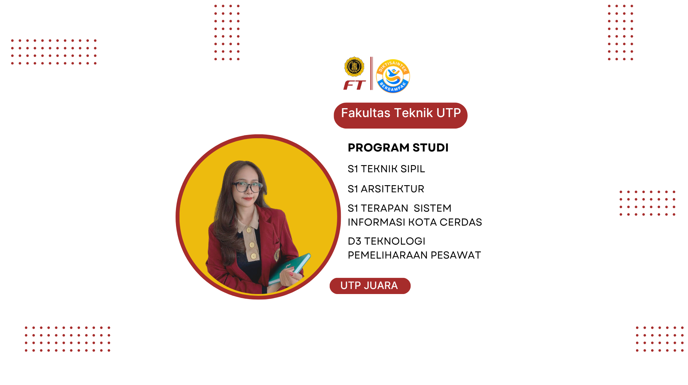
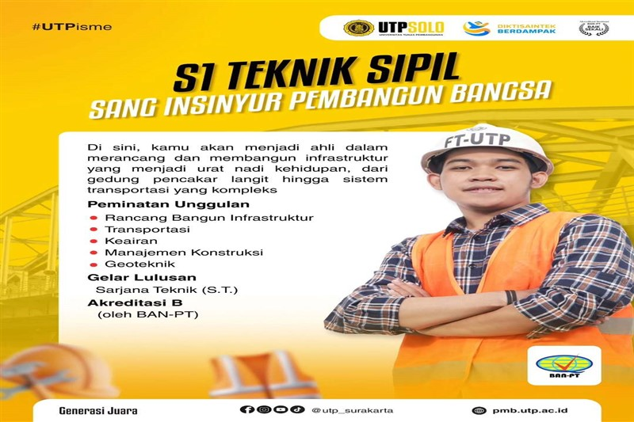
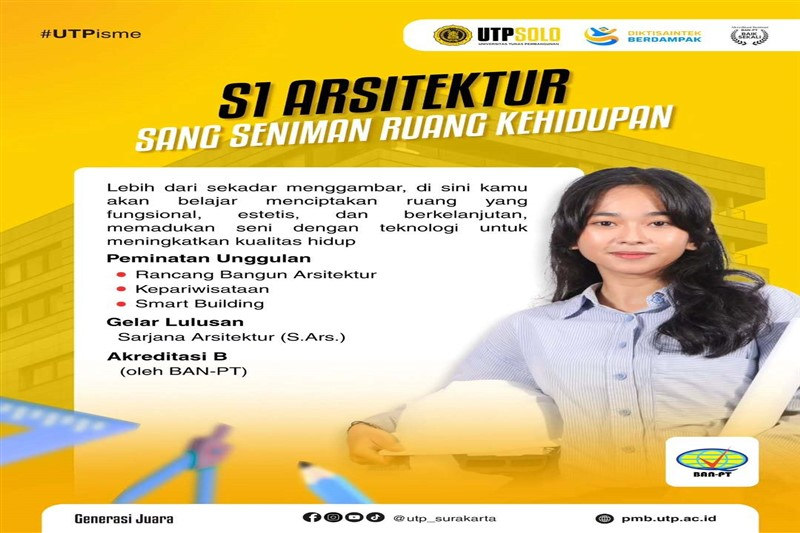
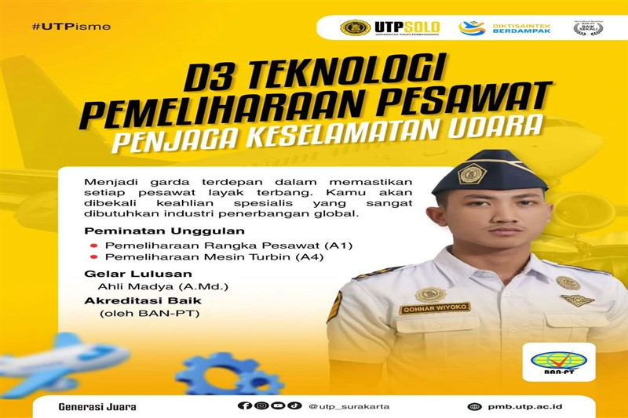
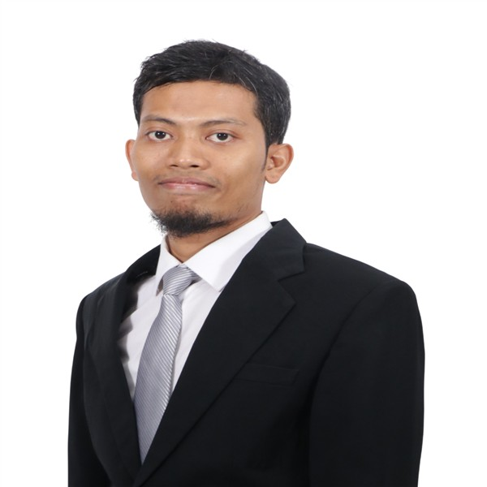
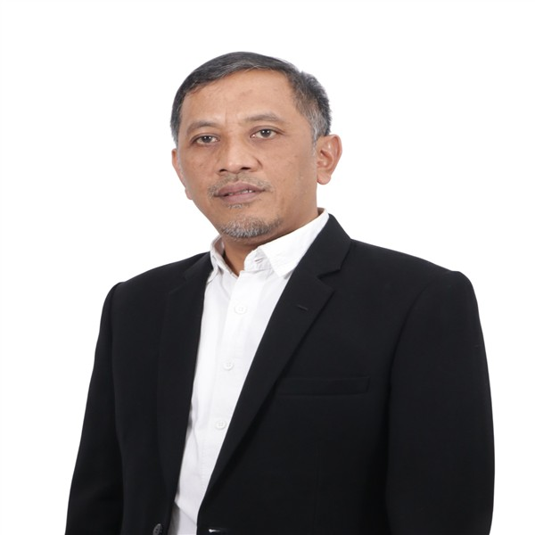
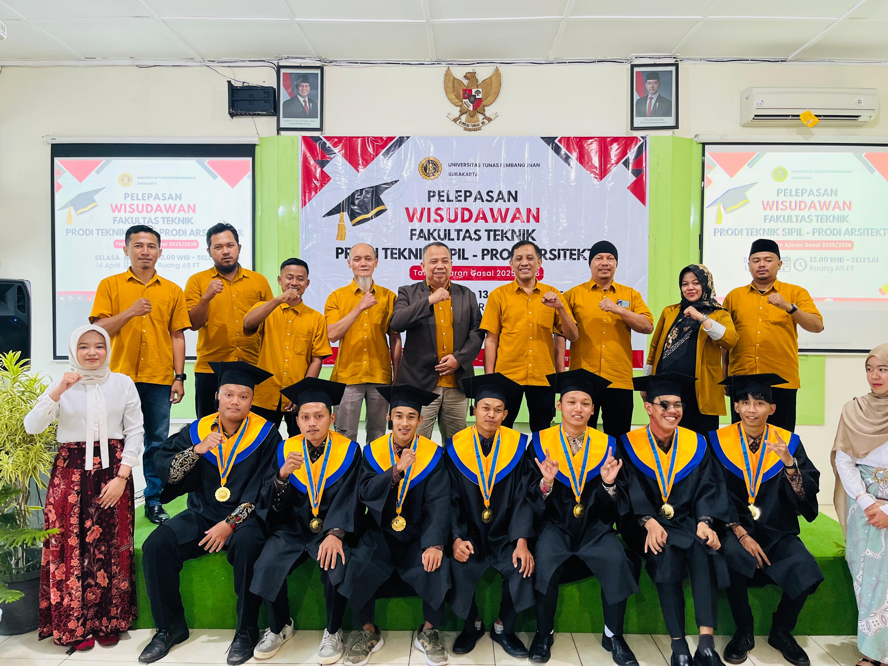
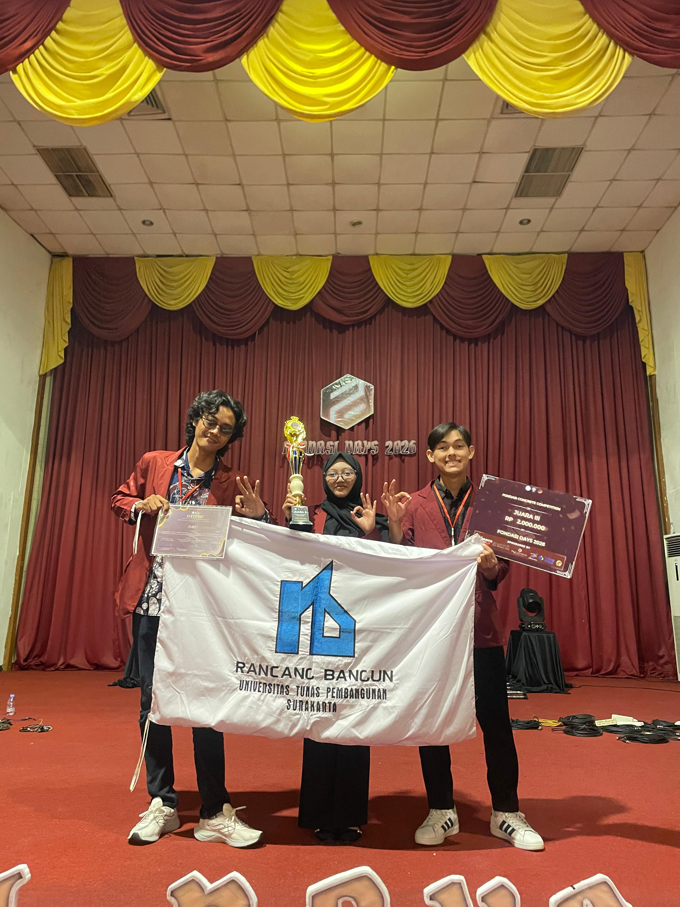
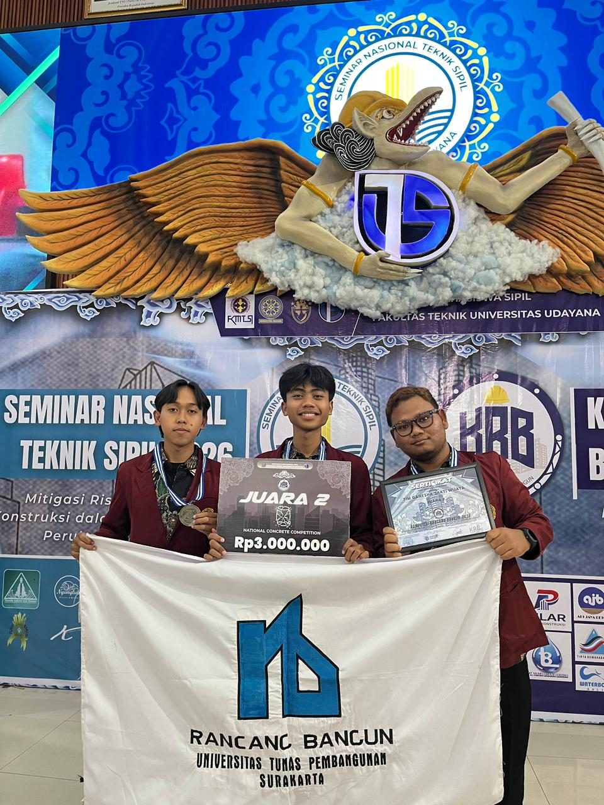

Satu fakultas, empat kekuatan untuk membangun Indonesia!
Di Fakultas Teknik UTP, kamu bisa menjadi perancang masa depan, baik sebagai konseptor maupun sebagai ahli terapan.
- S1 Teknik Sipil: Ahli membangun infrastruktur kokoh.
- S1 Arsitektur: Seniman perancang ruang kehidupan.
- S1 Terapan Sistem Informasi Kota Cerdas: Inovator perkotaan digital.
- D3 Teknik Pemeliharaan Pesawat: Spesialis penjaga keselamatan udara.
Alumni
Program Studi
Kegiatan
Dosen
Mengapa Harus Memilih di Fakultas Teknik
Dosen praktisi
Dosen praktisi yang tak hanya mengajar teori, tetapi juga berbagi pengalaman langsung dari lapangan industri.
Berbagai prestasi juara
Mahasiswa dan dosennya meraih berbagai prestasi juara di kancah nasional maupun internasional
laboratorium Lengkap
laboratorium kami dilengkapi dengan fasilitas paling mutakhir
Program Studi




Teknologi Pemeliharaan Pesawat
Spesialis penjaga keselamatan udara.

KAPRODI TPP Muhammad Ikhsan
Teguh Youno, S.T.,M.T
Dekan Fakultas Teknik
Rully S.T.,M.T
Wakil Dekan Fakultas Teknik
Our News
Berita & Kegiatan Terbaru

Fakultas Teknik Melepas 7 Wisudawan dalam Prosesi Yudisium di Ruang A5
Fakultas Teknik UTP resmi melepas 7 lulusan terbaiknya dalam upacara Yudisium yang berlangsung khidmat. Momentum ini menandai kesiapan para sarjana teknik baru untuk terjun dan berkontribusi langsung di dunia industri nasional.

TIM RANCANG BANGUN UTP MENDAPAT JUARA 3 DI AJANG FONDASI DAYS 2026
Inovasi maket struktur bangunan tahan gempa karya Tim Rancang Bangun Fakultas Teknik UTP berhasil memukau dewan juri dan menyabet piala Juara 3 dalam kompetisi bergengsi tingkat nasional, Fondasi Days 2026.

Selamat! Tim Ganesha Sakti Wijaya Sukses Mengondol Juara II di Universitas Udayana
Kompetisi ketat di Bali berbuah manis. Tim Ganesha Sakti Wijaya dari Fakultas Teknik UTP sukses mengharumkan nama almamater dengan meraih Juara II pada ajang kompetisi teknik sipil nasional di Universitas Udayana.